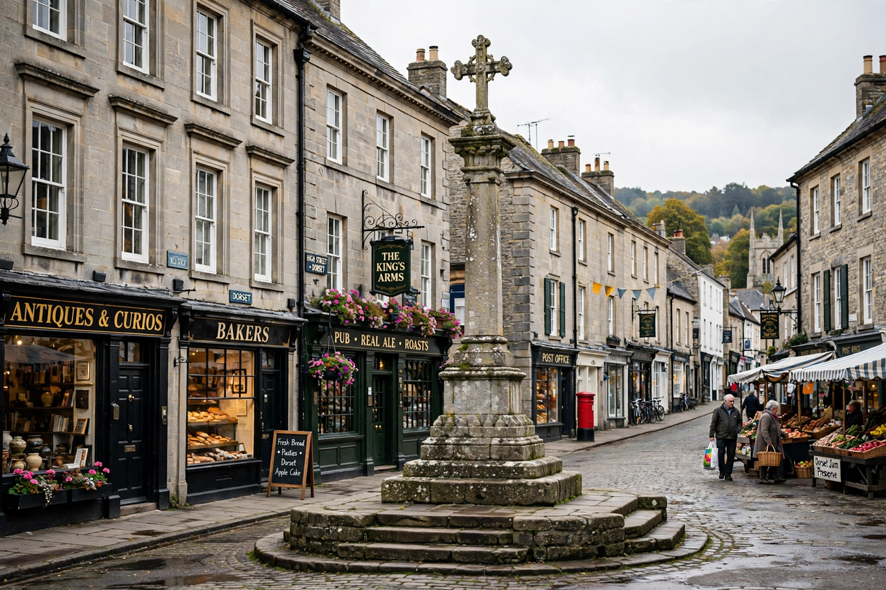

| Dorchester | |
|---|---|
 | |
| County | Dorset, England |
| Population | about 21,400 (2021 census, approx.) |
| Roman name | Durnovaria |
| River | Frome |
| Known for | Thomas Hardy; Roman town house; Maiden Castle nearby |
Dorchester is the county town of Dorset, England. It is situated between Poole and Bridport on the A35 trunk route. A historic market town, Dorchester is on the banks of the River Frome, just south of the Dorset Downs and north of the South Dorset Ridgeway, and adjoins the modern planned community of Poundbury, developed on Duchy of Cornwall land from 1993 under the direction of the then Prince of Wales.
The area has prehistoric roots: nearby Maiden Castle is one of the largest Iron Age hillforts in Europe. The Romans founded the town of Durnovaria around AD 70; its street plan survives in part, and a Roman town house with mosaic floors can be visited near County Hall. The town walls' line is preserved in the tree-lined "Walks". In 1685 Judge Jeffreys held the Bloody Assizes in Dorchester after the Monmouth Rebellion, and in 1834 the Tolpuddle Martyrs were tried in the town's Shire Hall court.
Excavations of the Roman and later town in the 1930s were directed by Mortimer Wheeler, whose work at Maiden Castle became a landmark of British archaeology.
The novelist and poet Thomas Hardy was born at Higher Bockhampton near the town and designed and lived at Max Gate on its outskirts. Dorchester appears in his novels as "Casterbridge", notably in The Mayor of Casterbridge. The Dorset County Museum holds a major Hardy collection.
Dorchester has railway stations on lines to London Waterloo (Dorchester South) and to Bristol and Weymouth (Dorchester West). Local attractions include the Keep Military Museum, the Tutankhamun and dinosaur exhibitions, and Borough Gardens. The town remains an administrative and retail centre for rural Dorset.